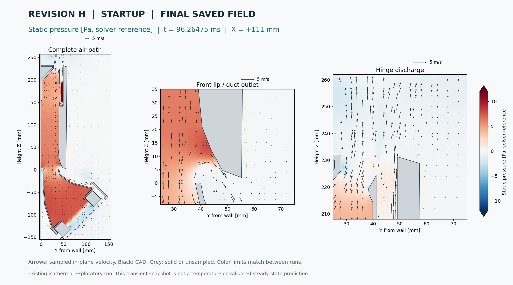
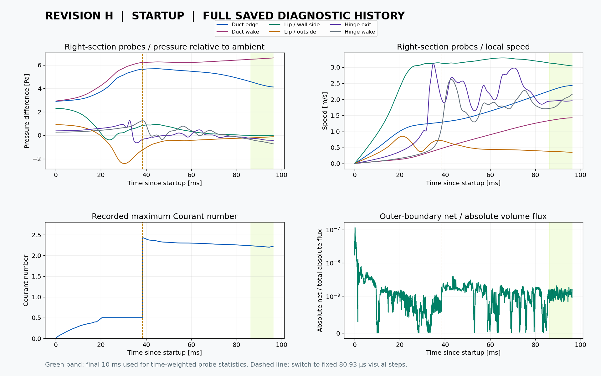
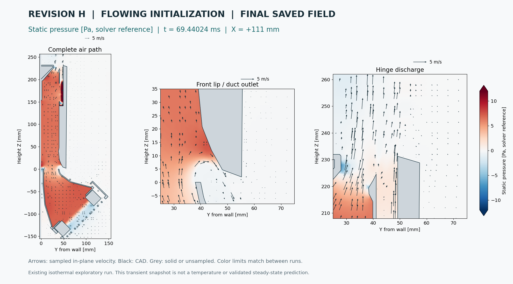
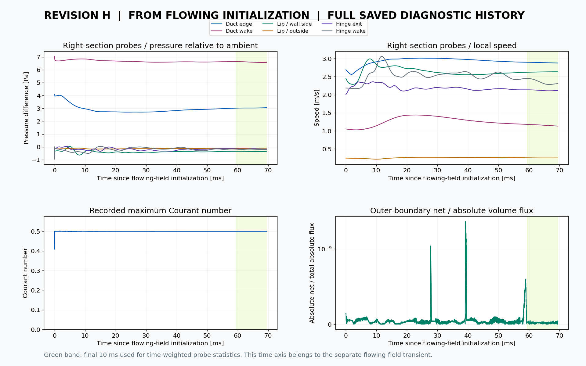

More from the recorded flow.
Final pressure, speed and vorticity maps with velocity arrows, complete saved probe histories, and updated local lip-flow measurements. Everything here comes from existing output; no additional simulation was run.
The clocks belong to separate runs. The flowing-field maps use the final saved state at 69.44 ms; its particle video ends slightly earlier, at 68.09 ms. The startup video already reaches its final saved state.
What the lip measurements show
Both final snapshots have outward and inward flow across the front opening at the sampled side sections. Net flow is outward. The late-window wall-side lip probes are below the ambient-reference probe; the magnitude depends on position and initialization.
| Wall-side lip probe | Averaging window | Mean relative pressure | Pressure fluctuation RMS |
|---|---|---|---|
| Startup / left | 86.26–96.26 ms | -0.071 Pa | 0.015 Pa |
| Startup / right | 86.26–96.26 ms | -0.025 Pa | 0.007 Pa |
| Already flowing / left | 59.44–69.44 ms | -0.219 Pa | 0.059 Pa |
| Already flowing / right | 59.44–69.44 ms | -0.352 Pa | 0.008 Pa |
Time-weighted mean and RMS over the final 10 ms, using piecewise-linear interpolation. These are local point measurements in the model, not a surface suction load.
Final local volume flux per unit span / m²/s
| Section at X = ±111 mm | Front outward | Front inward | Front net outward | Channel net upward |
|---|---|---|---|---|
| Startup / left | 0.01073 | 0.00207 | 0.00866 | 0.05914 |
| Startup / right | 0.01075 | 0.00218 | 0.00857 | 0.05813 |
| Already flowing / left | 0.00943 | 0.00015 | 0.00928 | 0.08123 |
| Already flowing / right | 0.00958 | 0.00011 | 0.00947 | 0.05677 |
The front line joins the divider tip to the laptop nose shoulder. The upward cut is at Z = 20.001 mm. These line integrals are per unit span, not full-width L/s, fan delivery, or a closed three-dimensional flow balance. Exact definitions and covered fluid lengths are in the summary download.
The model is isothermal: it does not calculate battery, lid or surface cooling. Negative local pressure alone does not establish a Bernoulli mechanism. The mesh and faster visual timesteps remain exploratory; no validated shedding frequency or steady-state claim is made.
Startup / final saved field
Final sampled time: 96.26475 ms. Pressure maps use the solver reference and the same ±12 Pa scale. Arrows show actual in-plane velocity at X = +111 mm, with CAD outlines.

{kind=link}
{kind=link}

The dashed line marks the change at 38.31885 ms to fixed 80.93 µs visual timesteps. The Courant axis includes the higher values in this extension instead of clipping them to the original adaptive limit.
Already flowing / final saved field
Final sampled time: 69.44024 ms. Pressure maps use the solver reference and the same ±12 Pa scale. Arrows show actual in-plane velocity at X = +111 mm, with CAD outlines.

{kind=link}
{kind=link}

Data, provenance and earlier evidence
The CSV downloads retain all 22 probes, including left, center-right and right positions. JSON includes source hashes. Statistics use physical-time weighting, so the change in sampling interval does not overweight the earlier adaptive segment.
Startup
- Probe summary CSV ↗
- Full probes CSV · gzip ↗
- Solver history CSV · gzip ↗
- Diagnostics + source hashes · gzip ↗
Already flowing
- Probe summary CSV ↗
- Full probes CSV · gzip ↗
- Solver history CSV · gzip ↗
- Diagnostics + source hashes · gzip ↗
The iteration-400 steady images, early full-width opening integrals and earlier installed-airflow package retain their original labels and provenance. They represent different numerical states or earlier geometry, so their numbers are not relabeled as these final transient results.
Older compressed diagnostic downloads were rebuilt where decompression failed, using original checkpoint files and their recorded content hashes. Archive repair record.